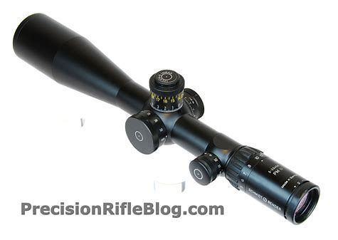

This is tied for the second most important part of long range shooting.
A good scope gives you one of the most important tools needed to reach a long distance.
You want a scope that is clear out to the distance you are shooting at.
You will want it to have an adjustable paralax to help focus it at other ranges as well.
It needs to have an adjustable view to reach out and see at further distances.
You will also want good eye relief so you can keep yourself at a comfortable distance from the scope.
Another important part is knowing your scope so you can make windage and elevation adjustments.
A good scope can help you put precise shots and make you a long range shooter.

Back
Home